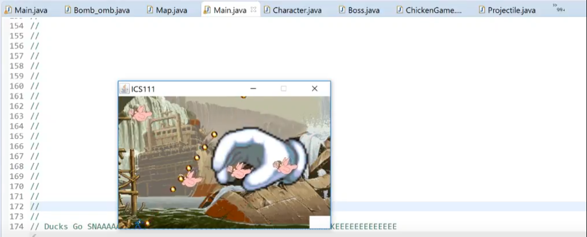

This ICS project was made through the deliberation of my partner and I as both of our interests surrounded video games, it only made sense that we use our newly aquired skills on java in creating a VERY basic video game. The task that we had to complete was create a single level that had the player jump, shoot, and run with at least one type of enemy and a boss fight at the end of the level. It sounds easy enough, but with our minimal knowledge and lack of practice sharing code to build a singular project, led to us running into multiple walls throughout the process.
For this project, I was tasked with handling the enemy AI, music, environment, and boss AI. My partner was tasked with bullet and jump physics, while we both worked on the player character together. The enemy and boss AI was built by understanding how many projectiles the player character can produce and giving an apporpriate amount of health for said enemy. This caused my partner and I to talk back and forth quite often during the process to make sure that fighting the enemies would be fair. The tracking of the enemy and boss AI had to be adjusted a lot so they could move in ways that were not stagnant straight lines and had some sort of randomness to it which made situations slightly more different on subsequent plays. Putting together the level had me grabbing assets from the web and resulted in it feeling disjointed, but that was just going to have to happen given time constraints. When we ended up combining both of our parts together it was a mess that we had to fix rather quickly.
This project allowed me to learn pair programming and the difficulties that occur when multiple people decide to work on one piece of code. This was extremely enlightening and helped with future courses and how to delegate work to my peers and how much of the workload I should handle in a given timeframe. Reflecting on myself and knowing where my limits lie helps a lot in projects.
